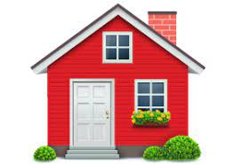

Our Mission
Founded by Simone La Ronde, in 2020, Manchester Cat and Kitten Rescue was created in response to the overwhelming amount of abandoned felines, who were adopted to be comfort during lockdown. However, after being taken in, in haste, their owners found that they could not care for them.
Our Values
 LOVE: At the heart of everything we do, is our love and respect for animals
LOVE: At the heart of everything we do, is our love and respect for animals-
 We collaborate with local vets to provide healthcare for our animals
We collaborate with local vets to provide healthcare for our animals -  We aim to give a safe, temporary home to our felines